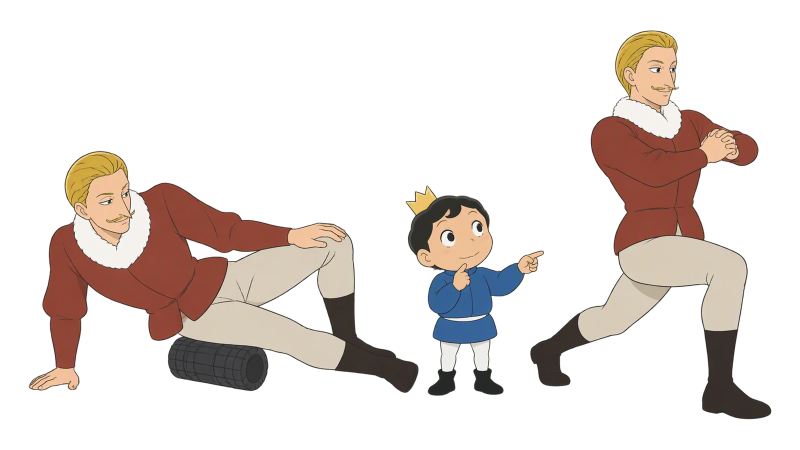
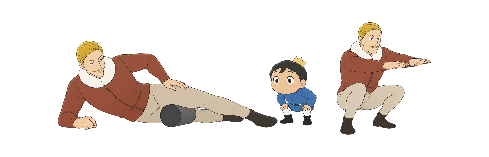
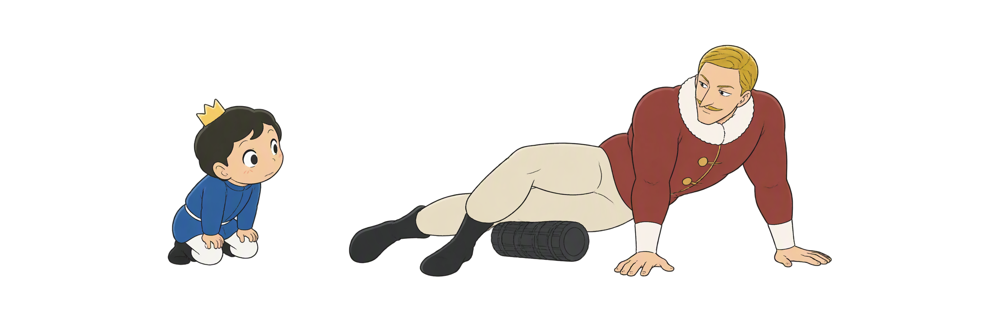
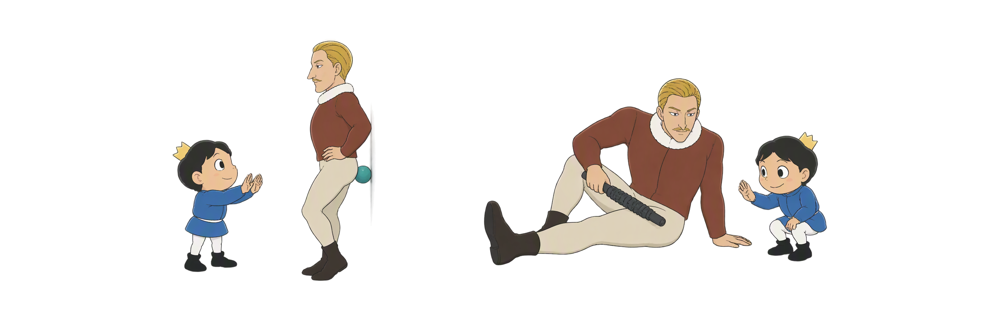
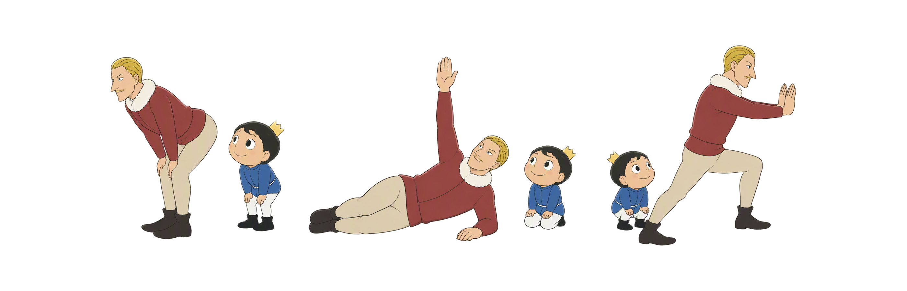
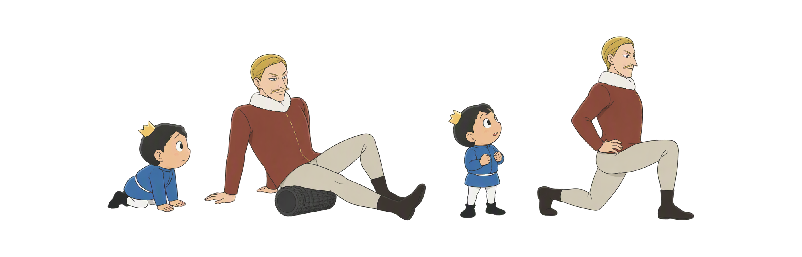
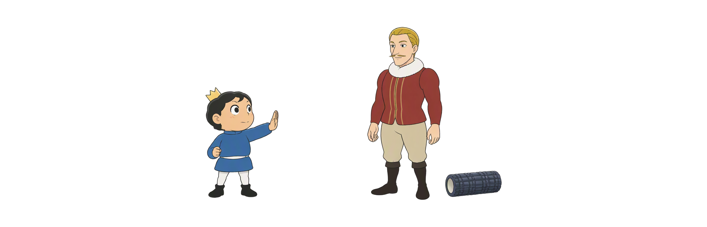

Day 46
泡沫轴不是越痛越好
轻压慢呼吸 · 滚后接主动动作 泡沫轴 × 筋膜球 × 髋胸椎踝
SMR机制活动度复测先看安全

轻压慢呼吸 · 滚后接主动动作 泡沫轴 × 筋膜球 × 髋胸椎踝
六个入口区分工具、目标和风险；每一步都以可呼吸、可停止和能复测为先。
短时感觉 · 不是碾碎
大区域 · 慢速度
足底臀部胸椎 · 轻压
滚后主动 · 接回动作
短时处理 · 再热身
急性与麻木 · 先停
图示用于理解工具与动作关系；急性损伤、炎症、出血风险、麻木或突然无力时停止并咨询专业人员。
先问目标，再用轻压力复测动作；短时变化要回到控制里。

用手脚分担体重，避开骨点和关节；每处短时探索，不追着最痛点碾。

足底、臀部和胸椎都要有支撑；集中压力更容易触发保护，先轻再停。

把短时感觉接回主动控制：髋折叠、胸椎旋转、踝前移，每次只改一个条件。

训练前处理影响动作的一个部位，训练后按舒适度整理；两边都要复测和留出恢复。

急性损伤、炎症、出血风险和神经异常都不是自行加压场景；先保护，再找合适评估。
